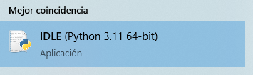
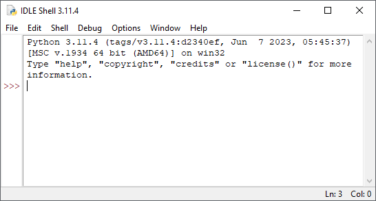
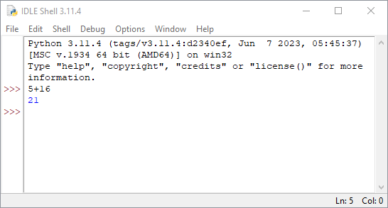
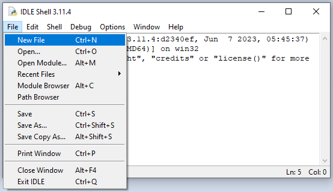
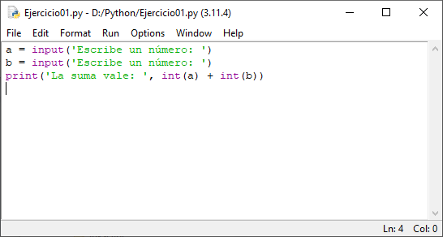
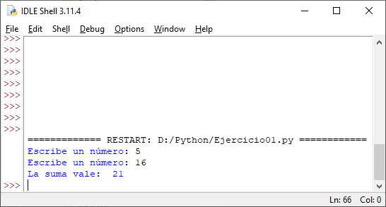

1. Introducció a la llengua de Python¶
Els llenguatges de programació són una manera de dir a un ordinador o ordinador què heu de fer. És com donar comandes a un robot, però en lloc d’utilitzar paraules, utilitzem un llenguatge especial anomenat codi. Els llenguatges de programació tenen les seves pròpies regles i sintaxi, i cadascun és adequat per a propòsits diferents.
Els programadors escriuen codi per fer coses com crear videojocs, aplicacions d’escriptori, aplicacions mòbils o pàgines web. Fins i tot poden utilitzar llenguatges de programació per analitzar grans quantitats de dades i fer prediccions.
Els llenguatges de programació s’utilitzen en una gran varietat de camps, des de la ciència de la informàtica i l’enginyeria fins al finançament i l’anàlisi de dades. El coneixement d’un llenguatge de programació és una valuosa habilitat per a qualsevol persona que desitgi treballar en el camp de la tecnologia.
En aquest curs aprendrem a programar en llengua Python. Python és un llenguatge de programació molt popular i molt potent. S'utilitza per fer moltes coses diferents, com ara crear aplicacions web, analitzar dades, crear programes d'intel·ligència artificial i fins i tot controlar els robots. És un idioma molt fàcil d’aprendre i té una sintaxi clara i senzilla, cosa que significa que és fàcil de llegir i escriure.
A més, hi ha molta informació i recursos disponibles en línia per aprendre Python, cosa que la fa encara més accessible. Podeu trobar tutorials, llibres i vídeos que us ajudaran a començar la programació a Python.
Voleu ser programador en el futur? L’aprenentatge de Python és un gran començament! Amb dedicació i pràctica, podeu fer moltes coses increïbles amb aquest idioma. Bona sort al vostre viatge d’aprenentatge de Python!
Entorn oci de Python¶
Per iniciar la programació, obrirem l’entorn de programació de Python estàndard, anomenat Idle. Feu clic a la icona de Windows i escriviu la paraula inactiu. A continuació, feu clic a la icona del ralentí.

Si la icona inactiva no apareix, cal instal·lar primer el llenguatge Python a l’ordinador. Descarregueu Python del lloc web oficial i executeu l'instal·lador. Després d’instal·lar Python torna al punt anterior.
Un entorn de programació apareixerà com el que podeu veure a la imatge següent:

Ara, per començar, escriurem un compte senzill: 5 + 16 i premeu ENTER (o torneu) al final. La pantalla mostrarà el resultat a la línia següent:

Podem escriure qualsevol operació senzilla o operacions més complexes. Aquest entorn s’anomena ** entorn interactiu **, perquè Python rep comandes escrites i retorna respostes immediatament.
Macros Python¶
Una altra manera de programar és crear fitxers de comandes que s’executaran més endavant quan vulguem. Aquesta altra manera de programar té l’inconvenient de no ser interactiu, no rebem resposta a cada ordre que escrivim. L’avantatge d’escriure macros és que podem tenir moltes comandes escrites per executar -les quan vulguem i totes les vegades que vulguem.
Per crear un nou clic macro al ralentí al `` file '' i, a continuació, a 'nou fitxer'`.

S'obrirà una nova finestra on podem escriure comandes, però sense rebre respostes. Ja no podeu veure el cursor amb tres símbols `` >>> `. Escriurem dins d'aquesta finestra les comandes que es poden veure a continuació:

Quan acabem, estalviarem aquest exercici a la carpeta python del disc de dades D:
`` D: python exercici01.py``
Ara podem executar el programa fent clic a la `` `` o prement la tecla de funció ' f5``. El resultat serà el següent:

Heu de respondre al programa escrivint els números que demaneu i prement `` Enter '' després de cada número.
Podem executar aquest programa tantes vegades com vulguem i podem afegir al programa totes les comandes que desitgem.
Per reobrir el programa un cop tancat, heu de fer clic a la icona del fitxer emmagatzemat Python i, prement el botó dret del ratolí, trieu l’opció ** "Edita amb Idle " **.